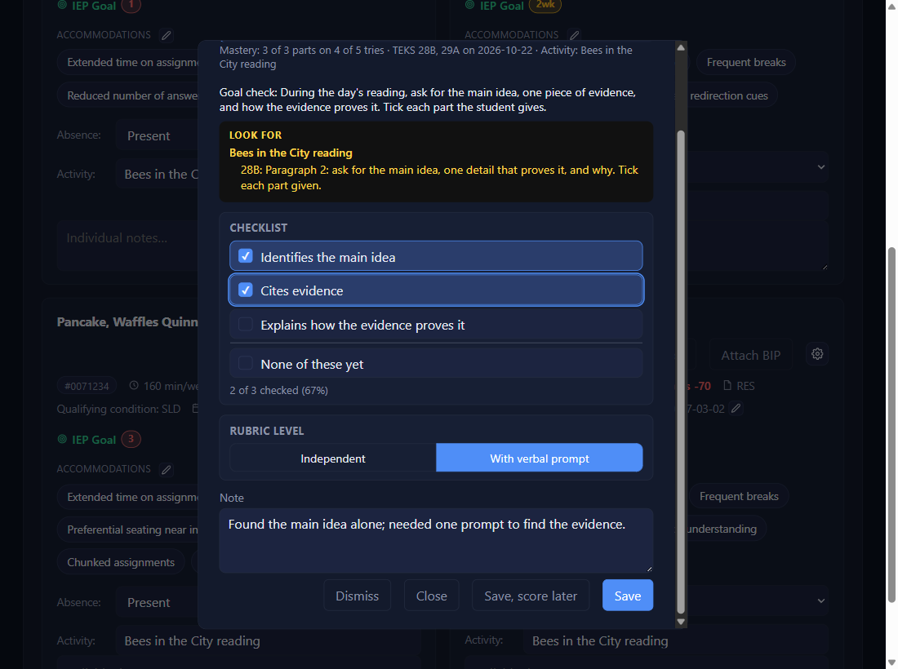
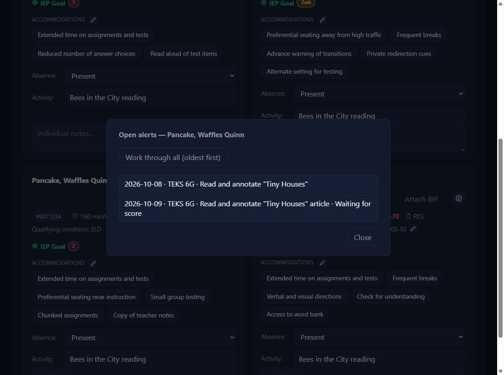
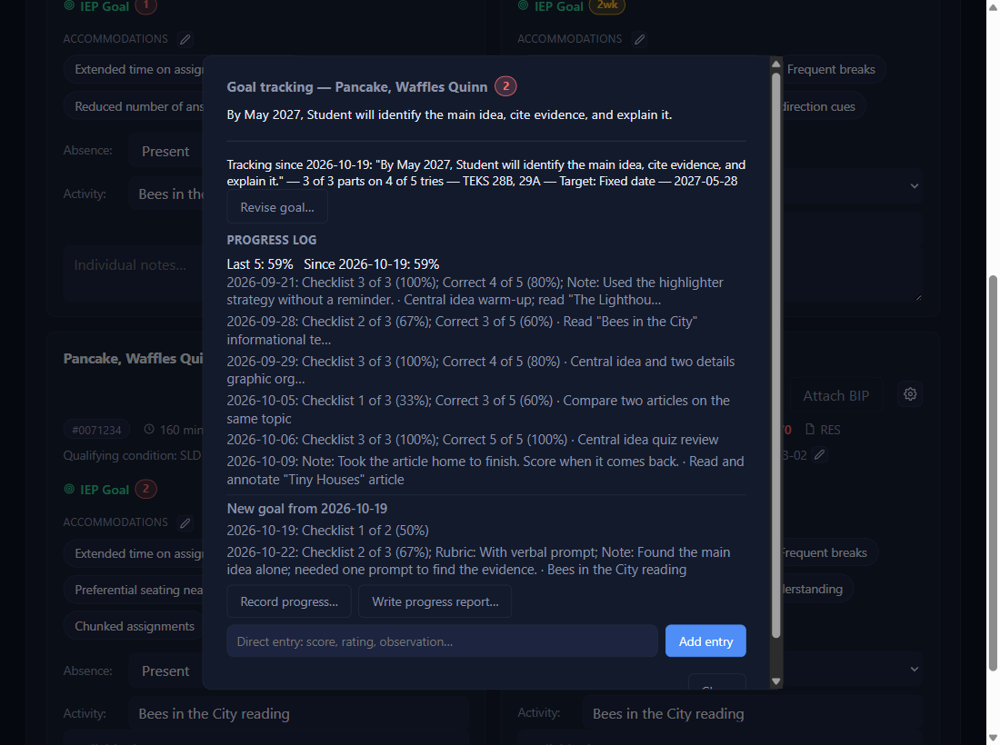

Record goal progress
Click the number next to IEP Goal
That number is how many alerts are waiting. Here, saving the Bees in the City reading (TEKS 28B) raised one for Waffles, on top of two older ones.

Pick the alert you have evidence forNEWfor version 0.4.21 and beyond
Open alerts lists every open alert for the student, oldest first: the date, the TEKS that matched, and that day's activity. Click the one you want. To clear a backlog in one sitting, click Work through all (oldest first) instead.

Read the Goal check and the Look forNEWfor version 0.4.21 and beyond
Under the goal, Goal check says how you planned to check this goal in class (you type it when you set up the goal). If the day's activity came from a lesson file with a Look for column, the black box with yellow text, LOOK FOR, says where that TEKS shows up in the activity and what to count. A typed activity shows no Look for.

Fill in what happenedNEWfor version 0.4.21 and beyond
The pop-up shows the goal's own methods. Tick each Checklist item the student met (it counts as you go), or type Correct _ of _ on a trial-fraction goal. A goal has one or the other, never both. Pick a Rubric level if the goal has one, and add a Note if you like.
Until you tick something the line reads Nothing ticked (not saved). If the student tried and showed none of the items, tick None of these yet, the last row: that records a real 0%.

Save, Save score later, Dismiss, or CloseNEWfor version 0.4.21 and beyond
Save records it, dated to the lesson's day, and takes you back to the list (it closes once no alerts are left). Dismiss if it doesn't apply (absent, modified work): nothing is recorded. Close leaves it waiting.
Save, score later is for work you'll score after class: it saves the rubric pick and the note now and leaves the alert open. The list then reads Waiting for score; open it again when the work comes back and fill in the score. Under Work through all, Skip goes on to the next alert without saving.

See it in the progress logNEWfor version 0.4.21 and beyond
Open IEP Goal: each day is one line with everything recorded that day, then the activity, for example Checklist 2 of 3 (67%); Rubric: With verbal prompt; Note: …. A trial reads Correct 7 of 10 (70%). Hover over a line to see which items were ticked. Last 5 and All-time sit on top.
No alert for the day you want? Record progress… opens the same pop-up for any tracked goal, dated to the Log date. If that date already has an open alert, it opens that alert instead. Next to it, Write progress report… drafts a report sentence: see Write a progress reportNEWfor version 0.4.21 and beyond. Recorded something by mistake? See Fix or delete recorded progressNEWfor version 0.4.21 and beyond.

A new goal starts a new countNEWfor version 0.4.21 and beyond
A new count starts only when you tick This is a new goal (start a new count) at the bottom of Revise goal… (a new IEP, say). The log then shows New goal from … where it starts, greys the old goal's entries, and the percentages count only the new goal: All-time reads Since …. Leave the box unticked for a fix or an update, even one that changes the wording (a typo, new TEKS, a corrected mastery note): the count carries on. A Goal Setup file with new goal wording ticks the box for you; untick it if the file only corrects the wording.
✓ You'll know it worked
- The alert is gone from the list, and the number went down.
- One new line for that day in the progress log, and the percentages updated.
- An alert saved for later reads
Waiting for score.
✕ Avoid these
- Saving an empty checklist to mean 0%. Nothing ticked saves nothing. Tick None of these yet for a real 0%.
- Dismiss when you meant Close. Dismiss records nothing and closes the alert for good.
⚠ If you see this
Fill in at least one method, or tick None of these yet.Tick an item, type a score, pick a level, or write a note first.
Fill in at least one method before saving.The same, on a goal with no checklist.